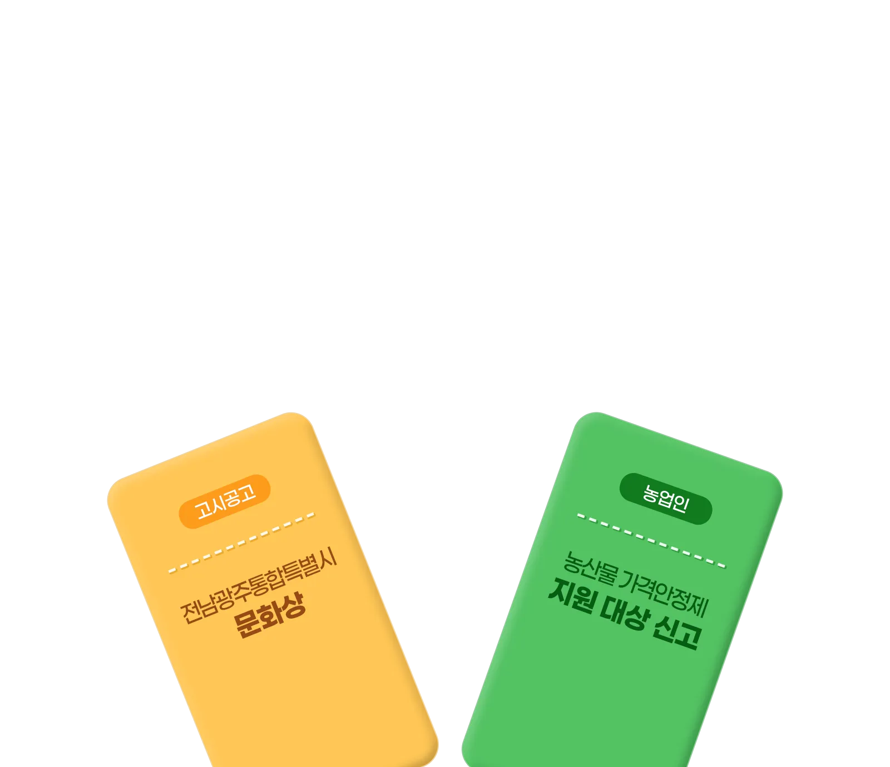
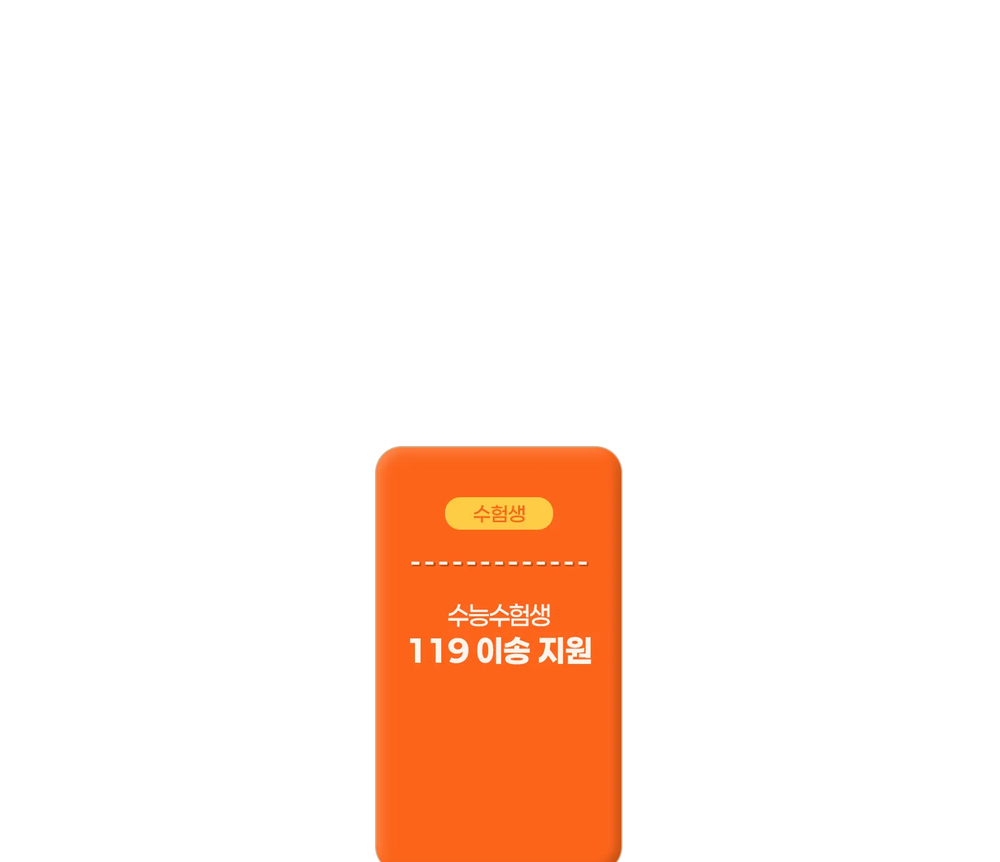

이번 주 챙겨야 할 기간 한정 꿀혜택
문화 발전을 이끈
공로자를 추천하세요!
남도 문화예술 발전에 기여한 공로자를 찾습니다. 2026년 전남광주통합특별시 문화상 수상 후보를 추천하세요.
문학 · 예술 · 학술 · 문화산업4개 부문 수상 후보 추천
- 전남광주통합특별시문화상은?
- 전남권역 22개 시·군에 거주하며 문학, 예술, 학술, 문화산업 분야에서 탁월한 업적을 인정받거나 활발한 활동으로 남도 문화예술 발전에 크게 이바지한 인물을 발굴해 시상하는 상입니다.
- 부문
- 문학부, 예술부, 학술부, 문화산업부
- 공모기간
- 까지
- 공모방법
- 방문 또는 우편전남광주통합특별시 서구 내방로 111, 광주청사 문화예술과
마늘, 양파 재배하세요?
재배면적 신고하세요!
마늘, 양파 재배 농가라면 농산물 가격안정제 지원 대상에서 제외되지 않도록 이번 달 말일인 30일까지 재배면적을 신고해 주세요.
가격 하락 시 차액 지원2027년산 마늘 · 양파 재배 농가
- 농산물 가격안정제란?
- 정부의 선제적 수급 관리에도 불구하고 농가 수취 가격이 기준 가격(생산비용) 아래로 하락 시 정부가 생산자에게 그 차액을 지원합니다.
- 신고대상
- 2027년산 마늘이나 양파를 품목별로 10a(1천㎡) 이상 재배하는 농업인과 농업법인
- 신고기간
- 까지
- 신고방법
- 농업경영체 등록·변경이나 의무자조금관리위원회 경작 신고
- 문의
-
- 농업경영체 등록·변경 1644-8778
- 마늘 경작 신고 마늘의무자조금관리위원회 044-868-6332
- 양파 경작 신고 양파의무자조금관리위원회 061-336-6339
시험장까지 안전하게!
119 이송 지원 서비스 운영
거동 불편 수험생의 이동 편의를 지원합니다. ‘119 이송 지원 서비스’ 신청하세요.
사전 예약한 거동 불편 수험생을 자택에서 시험장까지 119구급차로 안전하게 이송하고 시험 종료 후 귀가까지 완벽하게 지원합니다. 수험생 여러분은 멋지게 실력 발휘만 하세요!
자택 → 시험장 → 귀가까지거동 불편 수험생 · 119구급차 이송
- 신청기간
- 시험 전날인 까지
- 신청방법
- 광주권역 가까운 소방서로 전화 예약